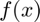
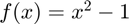
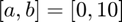
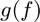
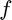

TestSuite
Class defining a test suite.
Back to Simple Unit Testing Toolbox Documentation.
Contents
- Properties
- Constructor
- add_test
- run
- Example #1: Basic test suite with all tests passing.
- Example #2: Test suite with a name and with both passed and failed tests.
- Example #3: Test suite that terminates on first failed test.
- Example #4: An actual test suite.
- Example #5: Test suite testing the counting of function evaluations.
- Function for Example #5
- See also
Properties
| Variable | Description | Format |
| tests | collection of unit tests | 1×N heterogeneous UnitTest |
| name | test suite name | char array |
| N | number of unit tests comprising test suite | 1×1 double |
| terminate | if true, test suite terminates after first failed test | 1×1 logical |
| color | if true, test results are printed in color | 1×1 logical |
Constructor
test_suite = TestSuite test_suite = TestSuite(name,terminate,color)
| Variable | Description | Format |
| name | (OPTIONAL) test suite name (defaults to empty string) | char array |
| terminate | (OPTIONAL) if true, test suite terminates after first failed test (defaults to false) | 1×1 logical |
| color | (OPTIONAL) if true, test results are printed in color (defaults to true) | 1×1 logical |
add_test
TestSuite.add_test(unit_test) TestSuite.add_test(TestEqual(X1,X2,name,n)) TestSuite.add_test(TestNotEqual(X1,X2,name,n)) TestSuite.add_test(TestError(f,args,name)) TestSuite.add_test(TestNoError(f,args,name)) TestSuite.add_test(TestSpeed(f_fast,f_slow,args,name)) TestSuite.add_test(TestFunctionCount(f,g,name))
Description: Adds a test to the test suite.
| Variable | Description | Format |
| unit_test | unit test - can be one of the following, which are all subclasses of the UnitTest class:
|
1×1 UnitTest |
See the following for documentation of the individual unit tests:
run
TestSuite.run
Description: Runs all tests in the test suite.
Example #1: Basic test suite with all tests passing.
Consider two nearly identical arrays.
X1 = [1 1;
1 1];
X2 = X1+0.00001;
These arrays are equal to 4 decimal places, but not equal to 5 decimal places. Let's create a test suite to test for this expected behavior. To create the test suite, we simply need to initialize a TestSuite object.
test_suite = TestSuite;
Adding tests for the expected behavior,
test_suite.add_test(TestEqual(X1,X2,'equal to 4 decimal places',4)); test_suite.add_test(TestNotEqual(X1,X2,'not equal to 5 decimal places',5));
To run the test suite, we can simply do
test_suite.run;
equal to 4 decimal places: Passed.
not equal to 5 decimal places: Passed.
>>>> WARNING: This test tested for inequality, but the arrays ARE equal to 4 decimal places.
========================================================================================================================
SUMMARY:
------------------------------------------------------------------------------------------------------------------------
Pass Rate: 100%
• total tests: 2
• passed tests: 2
• failed tests: 0
========================================================================================================================
Example #2: Test suite with a name and with both passed and failed tests.
For this example, let's consider a more complicated test suite that has both passed and failed tests. First, let's define some parameters we'll use for the tests.
X1 = [1 1;
1 1];
X2 = X1+0.00001;
f = @(x) x^2;
g = @(x,y) acos(x+y);
h1 = @(x) x;
h2 = @(x) sin(x)*asin(x)*cos(x)*acos(x)*tan(x)*atan(x);
Initializing the test suite with a name this time,
test_suite = TestSuite('Test suite for example #2');
Adding tests to the test suite that we know will fail,
test_suite.add_test(TestEqual(X1,X2,'equal to 5 decimal places',5)); test_suite.add_test(TestNotEqual(X1,X2,'not equal to 4 decimal places',4)); test_suite.add_test(TestError(f,{1},'error in evaluating f(x) = x² at x = 1')); test_suite.add_test(TestNoError(f,{zeros(2,1)},'no error in evaluating non-vectorized f(x) = x² when f is passed a vector'));
Adding tests to the test suite that we know will pass,
test_suite.add_test(TestError(f,{zeros(2,1)},'error in evaluating non-vectorized f(x) = x² when f is passed a vector'));
test_suite.add_test(TestNoError(@(x,y)mod(x,y),{10,1},'no error in evaluating mod(x,y) at (x,y) = (10,1)'));
test_suite.add_test(TestError(@(x,y)mod(x,y),{10,1,3},'error in passing three inputs to mod(x,y)'));
test_suite.add_test(TestSpeed(h1,h2,{1},'f(x) = x is faster to evaluate than f(x) = sin(x)'));
Running the test suite,
test_suite.run;
equal to 5 decimal places: FAILED.
>>>> Arrays are not equal to 5 decimal places.
>>>> Arrays ARE equal to 4 decimal places.
not equal to 4 decimal places: FAILED.
>>>> Arrays are equal to 4 decimal places.
error in evaluating f(x) = x² at x = 1: FAILED.
>>>> Function did not throw an error.
no error in evaluating non-vectorized f(x) = x² when f is passed a vector: FAILED.
>>>> Function threw the following error: Incorrect dimensions for raising a matrix to a power. Check that the matrix is square and the power is a scalar. To operate on each element of the matrix individually, use POWER (.^) for elementwise power.
error in evaluating non-vectorized f(x) = x² when f is passed a vector: Passed.
no error in evaluating mod(x,y) at (x,y) = (10,1): Passed.
error in passing three inputs to mod(x,y): Passed.
f(x) = x is faster to evaluate than f(x) = sin(x): Passed.
========================================================================================================================
SUMMARY: Test suite for example #2
------------------------------------------------------------------------------------------------------------------------
Pass Rate: 50%
• total tests: 8
• passed tests: 4
• failed tests: 4
Failed Tests:
• equal to 5 decimal places
• not equal to 4 decimal places
• error in evaluating f(x) = x² at x = 1
• no error in evaluating non-vectorized f(x) = x² when f is passed a vector
========================================================================================================================
Example #3: Test suite that terminates on first failed test.
Let's create a test suite that passes the first two tests but fails on the third test. First, let's define some arrays that we will use for the example test cases.
X1 = [1 1;
1 1];
X2 = X1+0.00001;
Next, let's initialize the unit tests.
unit_test_1 = TestEqual(X1,X2,'equal to 3 decimal places',3); unit_test_2 = TestEqual(X1,X2,'equal to 4 decimal places',4); unit_test_3 = TestEqual(X1,X2,'equal to 5 decimal places',5); unit_test_4 = TestEqual(X1,X2,'equal to 6 decimal places',6); unit_test_5 = TestEqual(X1,X2,'equal to 7 decimal places',7);
Let's make a test suite that terminates upon the first failed test.
terminate = true; test_suite = TestSuite([],terminate);
Adding the unit tests to the test suite,
test_suite.add_test(unit_test_1); test_suite.add_test(unit_test_2); test_suite.add_test(unit_test_3); test_suite.add_test(unit_test_4); test_suite.add_test(unit_test_5);
Running the test suite,
test_suite.run;
equal to 3 decimal places: Passed.
equal to 4 decimal places: Passed.
equal to 5 decimal places: FAILED.
>>>> Arrays are not equal to 5 decimal places.
>>>> Arrays ARE equal to 4 decimal places.
TEST SUITE TERMINATED EARLY DUE TO FAILED UNIT TEST.
Example #4: An actual test suite.
The Numerical Differentiation Toolbox uses this unit testing framework to run all of its unit tests. Click here to access the unit testing code for that toolbox.
Example #5: Test suite testing the counting of function evaluations.
Often, iterative algorithms (such as root-finding and optimization algorithms) require evaluating a function, , many times. Theses algorithms also typically count the number of function evaluations. Setting up tests to determine if these function counts are actually correct can be a bit tedious/confusing.
As an example, let's consider the case where we are finding the root of  using MATLAB's fzero function with an initial interval of . MATLAB's fzero function returns the number of function evaluations performed, but we want to check if it actually counts the function evaluations correctly.
First, let's define the function .
f = @(x) x^2-1;
Next, let's define a function  that takes  as an input and returns the number of times is evaluated when MATLAB's fzero function is used to find the root of using an initial interval of . Note that we use function_for_example_5 defined at the bottom of this page to help define . Essentially, function_for_example_5 accepts a function and an initial interval and returns the number of function evaluations performed by MATLAB's fzero function. Here, we are just applying a function handle to function_for_example_5 to get it in the form .
g = @(f) function_for_example_5(f,0,10);
Creating and running the test suite,
test_suite = TestSuite('Testing the number of function evaluations.'); test_suite.add_test(TestFunctionCount(f,g,'testing function count provided by fzero')); test_suite.run;
Function for Example #5
function n_feval = function_for_example_5(f,a,b) [~,~,~,output] = fzero(f,[a,b]); n_feval = output.funcCount; end
testing function count provided by fzero: Passed. ======================================================================================================================== SUMMARY: Testing the number of function evaluations. ------------------------------------------------------------------------------------------------------------------------ Pass Rate: 100% • total tests: 1 • passed tests: 1 • failed tests: 0 ========================================================================================================================
See also
TestEqual | TestNotEqual | TestError | TestNoError | TestSpeed TestFunctionCount